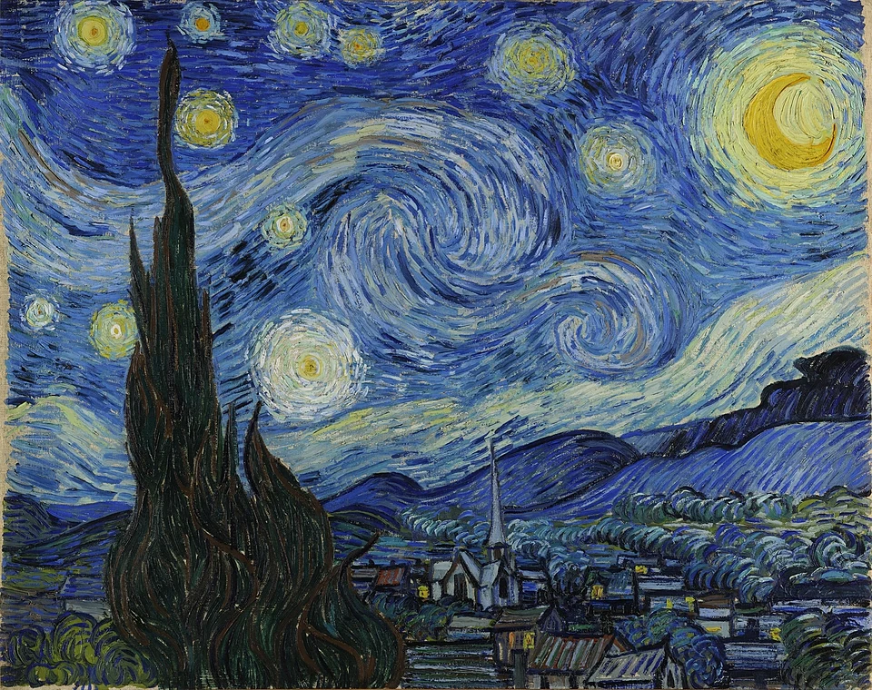
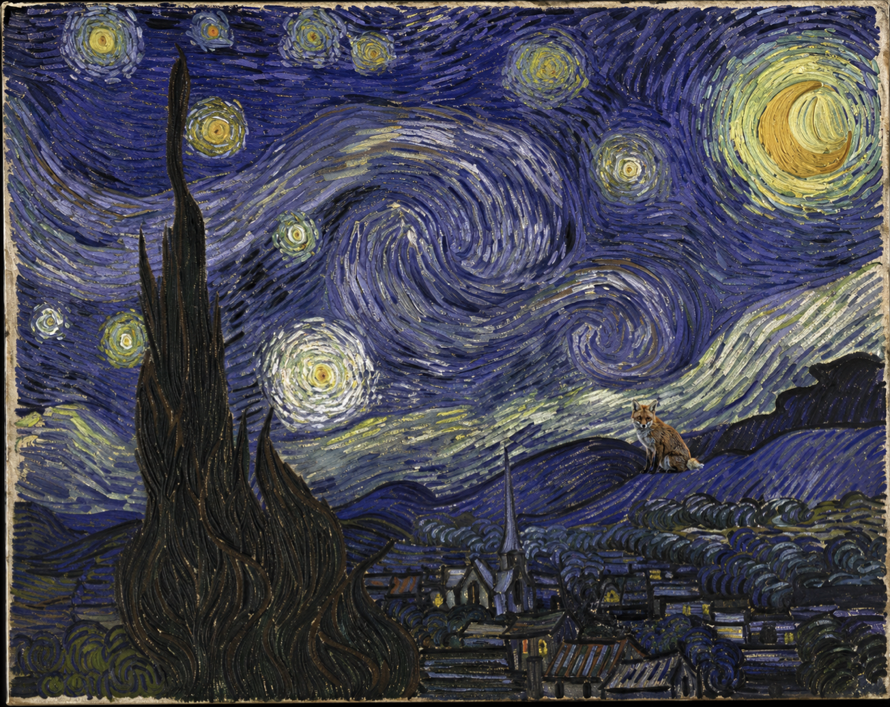

« La nuit étoilée » est une peinture de Vincent Van Gogh, ce tableau représente ce qu'il pouvait voir et inventer de la chambre qu'il occupait dans l'asile du monastère Saint-Paul-de-Mausole à Saint-Rémy-de-Provence en mai 1889.

"le renard observateur" est une peinture faite en 2008, elle s'inspire de "la nuit étoilée" de Van Gogh. C'est une peinture faite par Vixen, Vixen signifie renarde en anglais, alors elle a décidé de faire sa signature sur chacun de ses tableaux en mettant un renard en arrière-plan. Le renard represente le silence, et plus particulièrement dans ce tableau. Le renard exprime le silence de la nuit, il observe le village comme s'il voulait le protéger des danger de la nuit.